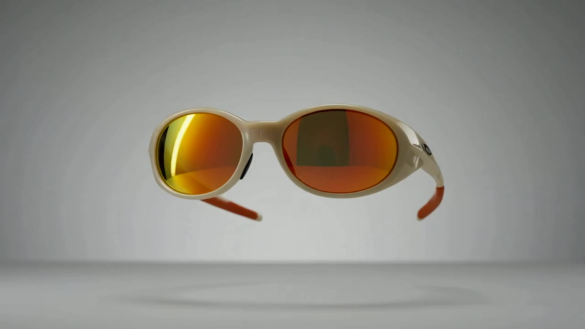
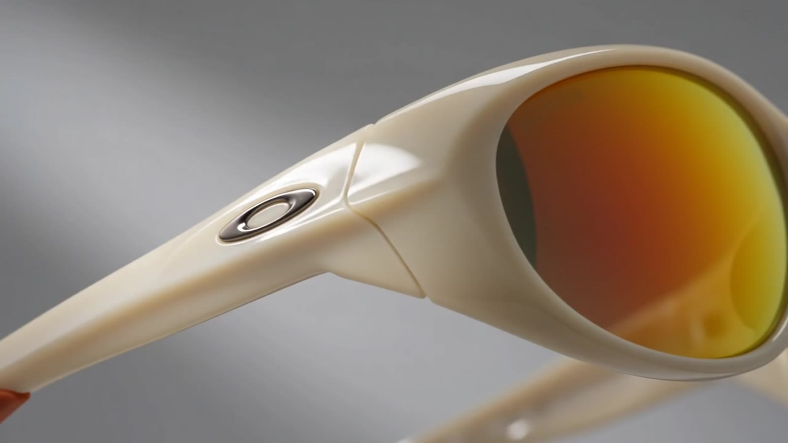
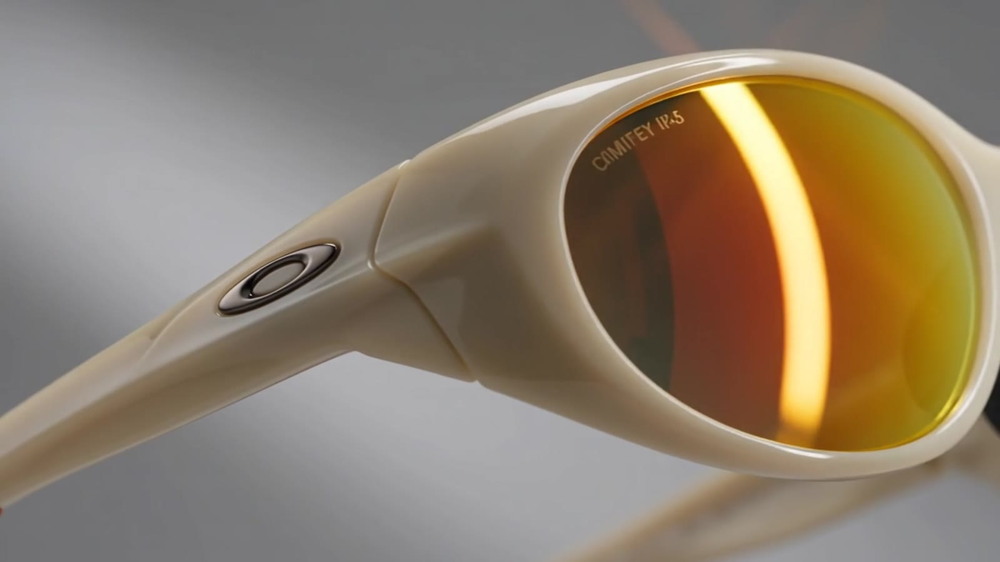
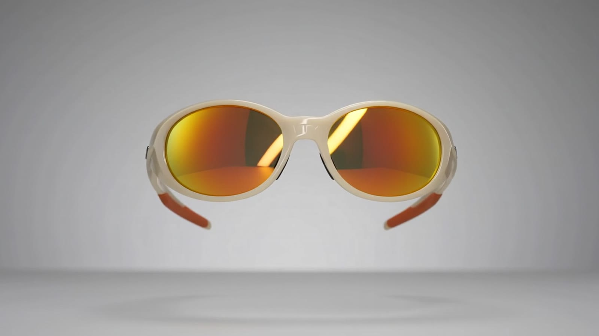
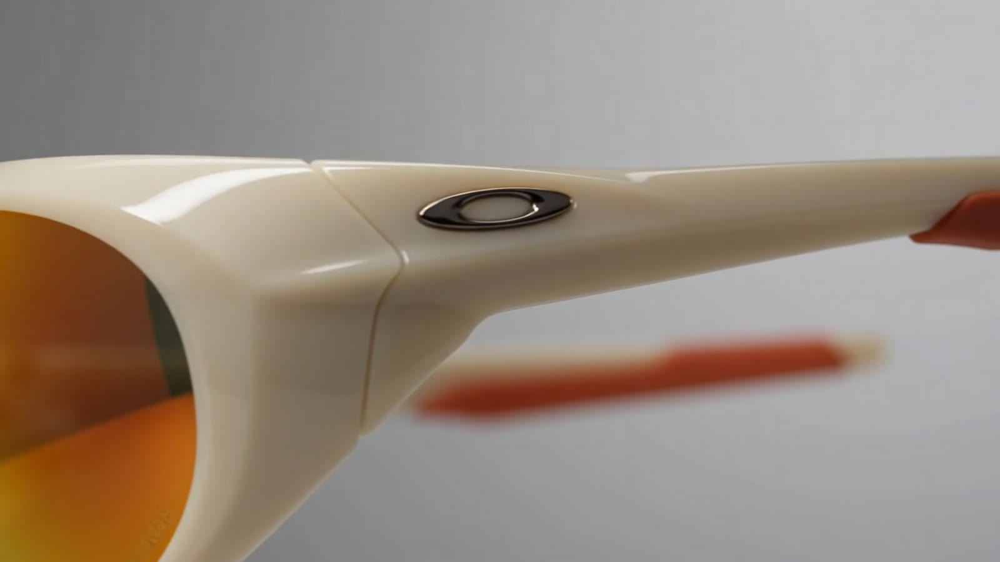
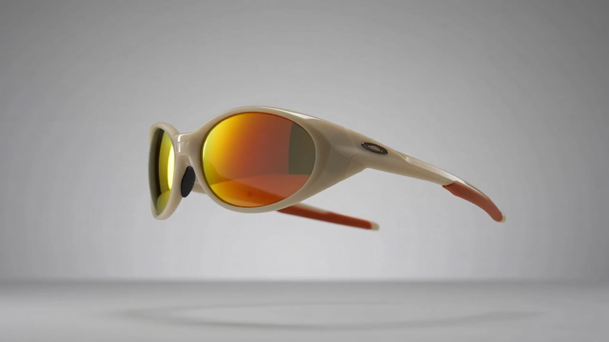

Archive — Reissued
Bone / Fire Iridium
001 — Overview
We did not soften it. We sharpened everything around it.
Twenty-six years after the original, the Eye Jacket returns in bone. Same single-piece wrap. Same refusal to put a hinge anywhere the light might get in.
What changed is the surface. A fire iridium mirror, laid down in a vacuum chamber, tuned for the hour when the sun sits low and everything turns to glare.

002 — Anatomy
Four decisions.
The ellipse
Machined, then set flush into the stem. You feel a seam only where the design wants one.
Fire iridium
Twelve coating passes. 17% visible light transmission, and no colour shift at the edge of the curve.
The orbital
A closed rim carries the lens all the way round, so the frame — not the lens — takes the impact.
The stem
O Matter, tapered along its length. Stiff at the hinge point, springy where it meets your head.
003 — Iridium
Light, filed downto the useful part.
Iridium is not a tint. It is a mirror grown on the outside of the lens in a vacuum, layer by layer, until the surface rejects exactly the wavelengths you did not ask for.
- 17%Visible light transmission
- 100%UVA · UVB · UVC blocked
- 12Coating passes
004 — The film




005 — Specification
Everything measured.
- Frame
- O Matter, bone
- Lens
- Plutonite, fire iridium
- Base curve
- 8
- Light transmission
- 17%
- UV filtration
- 100% UVA · UVB · UVC
- Earsock
- Unobtainium, burnt orange
- Icon
- Machined ellipse, flush-set
- Weight
- 29 g
- Fit
- Standard, three-point contact
- Case
- Moulded hard shell, microfibre bag
006 — Availability
The first run is four hundred pairs.
Numbered on the inside of the left stem. Shipping from the first week of October.